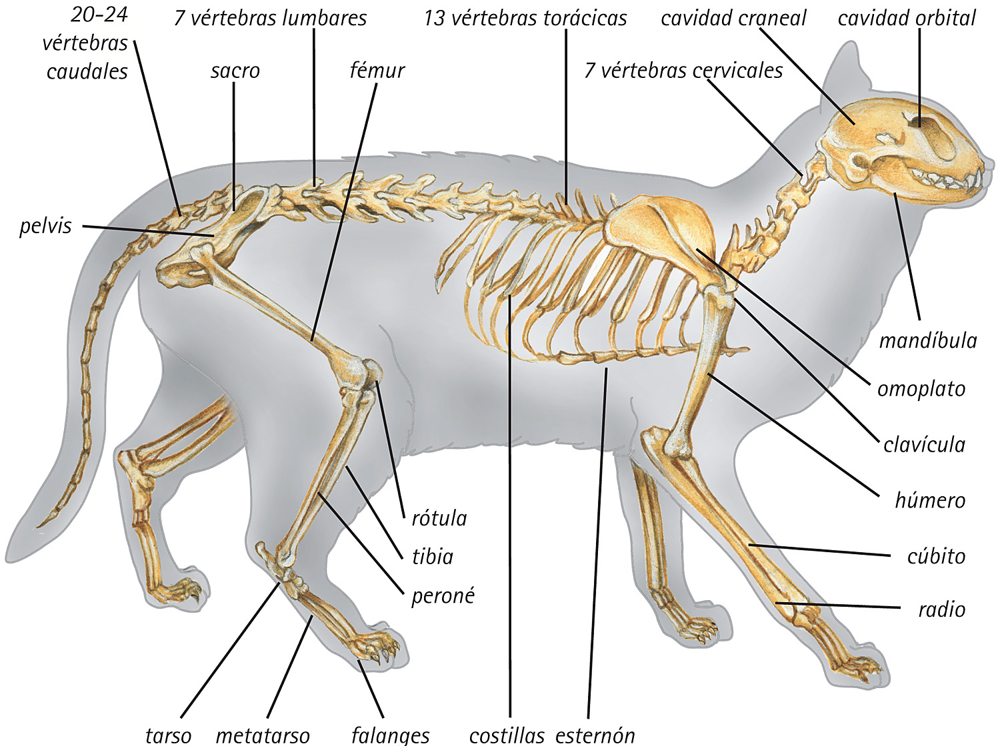

¿De dónde vienen los gatos domésticos?

El gato doméstico (Felis catus) desciende del gato salvaje africano (Felis silvestris lybica). Su domesticación comenzó hace aproximadamente 10.000 años en el Creciente Fértil, la región del Medio Oriente donde también nació la agricultura.
"Los gatos no fueron domesticados, ellos eligieron vivir cerca de los humanos porque les era conveniente."
— Teoría etológica sobre la domesticación felina
La relación con los agricultores
Cuando los humanos empezaron a almacenar grano, aparecieron los ratones. Los gatos salvajes se acercaron a cazar estas presas fáciles, y los humanos, al ver su utilidad, comenzaron a tolerarlos y eventualmente a adoptarlos.
Los gatos en el Antiguo Egipto
En el Antiguo Egipto los gatos eran considerados sagrados y estaban asociados a la diosa Bastet, diosa de la protección y el hogar. Matar un gato, incluso accidentalmente, podía ser castigado con la muerte.
¿Sabías que? El ADN mitocondrial de los gatos domésticos de todo el mundo se puede rastrear hasta solo 5 hembras de gato salvaje africano.
Expansión por el mundo
Los gatos se expandieron por el mundo gracias a los barcos mercantes. Los marineros los llevaban a bordo para controlar la plaga de ratones, y así los felinos llegaron a Europa, Asia y eventualmente a América.
| Época | Región | Rol del gato |
|---|---|---|
| 10.000 a.C. | Creciente Fértil | Control de plagas |
| 3.500 a.C. | Egipto | Animal sagrado |
| 500 a.C. | Grecia y Roma | Mascota y cazador |
| Siglo XV | Europa y América | Compañero en barcos |